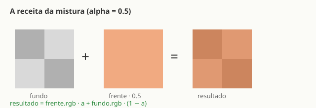
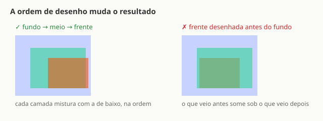

← Mapa do curso · 🎁 Bônus · Módulo Extra
Vidro, água, fumaça, o menu de pausa que deixa ver o jogo congelado atrás — tudo isso é
transparência. Até agora, toda cor que você pintou terminava em 1.0.
Esse 4º número tem nome: alpha. Bora deixar a luz passar.
Lá no M2 você viu que uma cor é vec4(r, g, b, a) — e a gente sempre botou
a = 1.0 sem pensar. Esse último número é o alpha: 1.0 =
totalmente opaco (tampa tudo), 0.0 = totalmente transparente (some).
Abaixo, um círculo laranja por cima de um fundo xadrez. Arraste o alpha de
1.0 até 0.0 e veja o xadrez aparecer através do círculo — não é só
escurecer, é misturar com o que está atrás.

A regra é simples: resultado = frente.rgb * a + fundo.rgb * (1 - a). Com
a = 1 sai só a frente; com a = 0 sai só o fundo; com a = 0.5,
meio a meio. É o mesmo mix que você viu no M3 — só que feito pela GPU automaticamente.

Preveja antes de ver: o círculo abaixo começa com a = 1.0 (opaco,
tampa o xadrez). Se você trocar por a = 0.5, o que vai acontecer com o xadrez embaixo?
Escreva, clique ▶ Test Drive e confira: se o xadrez começar a aparecer através do círculo, você acertou. Travou? 💡 Mostrar solução.
(0,0,0) puxa toda cor pra baixo. "Ver através" só
aparece quando tem um fundo com cor atrás — por isso o xadrez.a = 1 opaco, a = 0 transparente. Quando um programa
mostra "opacidade 70%", é a = 0.7.